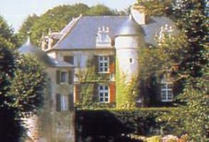
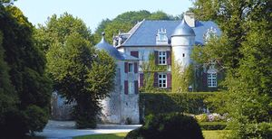
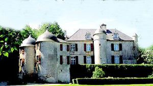
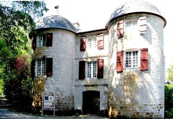
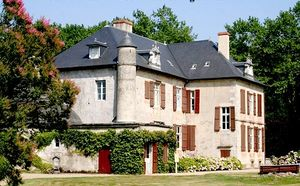
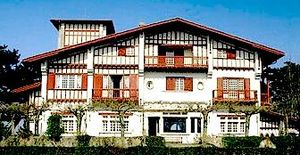
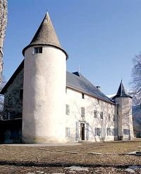

Recensement Jean-Claude Truffet
| Département | 64 — Pyrénées-Atlantiques |
| Canton | Hendaye |
| Commune | Urugne |
| Type d'édifice | Château |
| Période d'origine | XIV |







URTUBIE, cest en 1341 que Martin de Tartas seigneur d'Urtubie reçoit du Roi dAngleterre, duc dAquitaine, lautorisation de construire un château avec murailles et fossés. En 1415 l'héritière Domilia Martinez d'Urtubie par alliance fit passer le château à Saubat de Sault, leur fils Jean de Montréal époux de Maria Téresade Lezcano sera le père de Marie qui incendiera le château aussitôt reconstruit. À cette occasion, il nomma Jean d'Urtubie comme chambellan et l'emmena à la cour où le petit Louis d'Urtubie fut élevé avec le futur Louis XII. En 1505, Louis XII alors Roi de France, autorisa son ami d'enfance Louis d'Urtubie à agrandir le château. Il fit donc construire l'actuelle salle de chasse et les salles du haut (aujourdhui le grand salon et les chambres d'hôtes) et la tour centrale avec son escalier « à vis suspendu ». En 1654, soit 6 ans avant son mariage à Saint-Jean de Luz, Louis XIV érigea le domaine en Vicomté et Salvat d'Alzate dUrtubie fut nommé Bailli dépée du Labourd, sa petite-fille Jeanne de Lalande Gayon apporte le domaine à Pierre Raymond de Lalande qui fera des aménagements au château en 1745 la physionomie qu'il a conservé depuis. En 1830 Pierre Eloi de Raymond Lalande vend à un descendant de Salvat d'Alzate François de Larralde-Dieustéguy maire de d'Urrugne meurt sans postérité le château revient à sa soeur mariée à Jules Labat la comtesse Paul de Coral née Labat hérite en 1911 son fils Bernard maire député le rénove pour le rendre plus habitable et c'est le petit-fils le comte Paul-Philippe de Coral qui l'a fait réaménagé, en un bel hôtel de charme.
La construction du château d'URTUBIE remonte à 1341. On ne sait que peu de choses sur les premières familles d'Urtubie qui ne semblent pas avoir possédé de maison forte sur la seigneurie. un château de pierre avec murailles et fossés, "parce quil nen existe pas dautre à trois lieues de là ", afin de contrôler la route dEspagne. Martin mourut tragiquement à Bayonne en 1343 et cest son frère, Auger de Tartas, qui achève la construction dUrtubie. À la fin du XVIIe siècle, son fils fit enlever les tuiles du toit pour les remplacer par des ardoises, aménagea les fenêtres mansardées et fit construire la chapelle.
Au XIVe siècle, le château se composait dun donjon avec quatre échauguettes, dun chemin de ronde qui entourait le donjon et dun châtelet constitué de deux tours qui formaient le poste de garde et encadraient le pont levis. Il subsiste encore aujourdhui le donjon, les deux tours du châtelet et les murailles de la partie nord du chemin de ronde. Entre 1700 et 1743, les douves furent rebouchées. Le vicomte dUrtubie aménagea, par-dessus, un parc à l'anglaise et y fit construire une orangerie. Il ajouta également une aile, orientée au sud, dans laquelle se trouve le petit salon. Au début du siècle, la terrasse fut aménagée en partie sur les anciennes murailles et le châtelet fut agrandi pour y loger le fils ainé. Le château d'Urtubie est classé aux M.H. depuis 1974.
Famille de Martin d'Urtubie
"
Château d'Uturbie 43° 22' 00 nord, 1° 41' 18 ouest